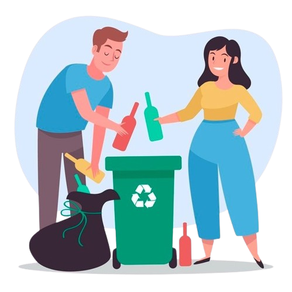

7,5 Juta Ton Sampah di Indonesia Belum Terkelola Dengan Baik
Pengelolaan sampah sangat diperlukan untuk mengurangi dampak negatif lingkungan dan memanfaatkan kembali sumber daya melalui berbagai metode, termasuk pemilahan sampah, daur ulang, dan upaya-upaya lainnya.
Pelajari SelengkapnyaKondisi Sampah di Indonesia
Kondisi sampah di Indonesia masih sangat memprihatinkan, sebagian besar sampah masih bercampur dan belum terkelola dengan baik. Menurut data dari UNEP tahun 2021 menunjukkan bahwa sampah organik yang dihasilkan mencapai 20,93 juta ton/tahun.
Jenis-Jenis Sampah
Sampah organik adalah jenis sampah yang berasal dari makhluk hidup atau bahan-bahan yang dapat membusuk dan terurai secara alami oleh mikroorganisme seperti bakteri dan jamur.
Sampah anorganik adalah jenis sampah yang tidak mudah terurai secara alami dan berasal dari material non-hayati, seperti logam, kertas, plastik atau kaca.
Sampah Bahan Berbahaya dan Beracun (B3) adalah jenis sampah yang mengandung bahan-bahan yang dapat membahayakan kesehatan manusia dan lingkungan, seperti bahan kimia beracun, zat berbahaya, atau limbah industri.